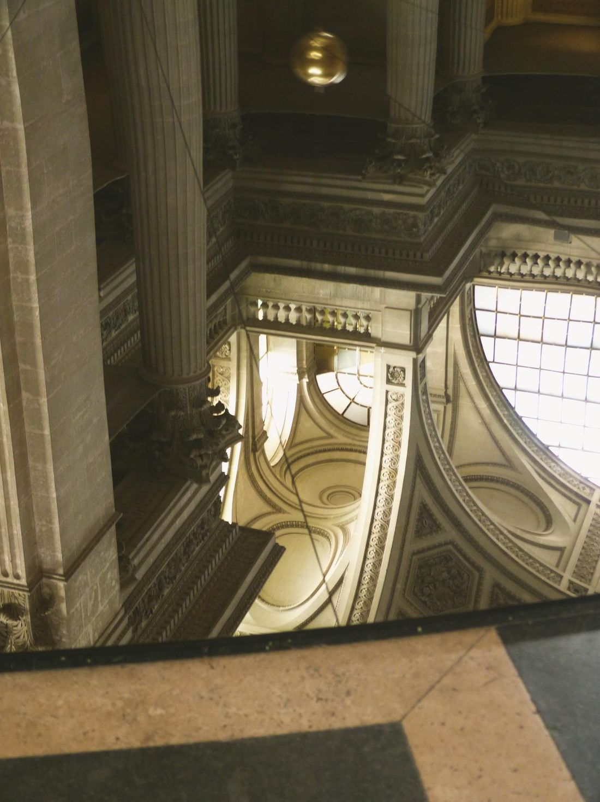
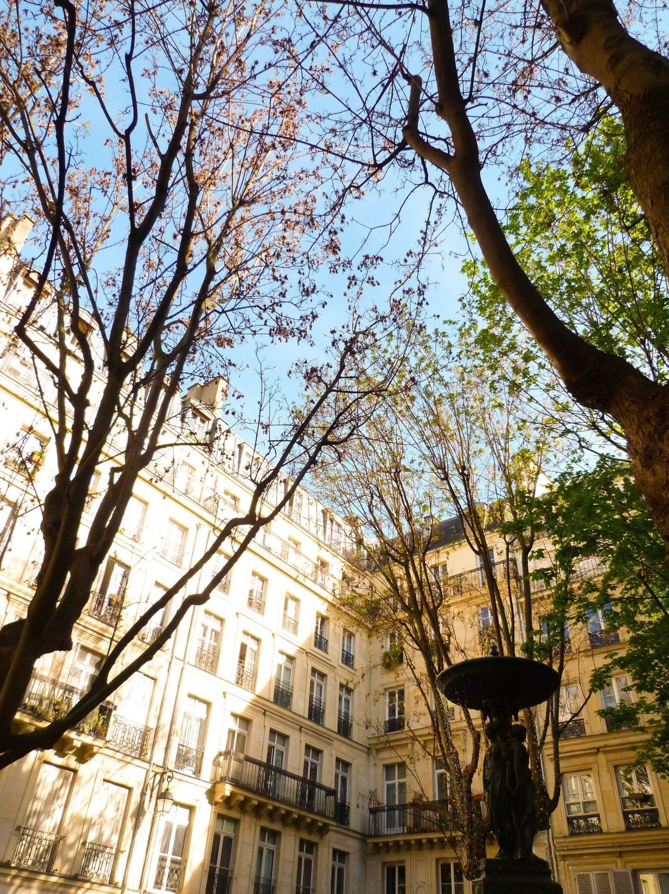
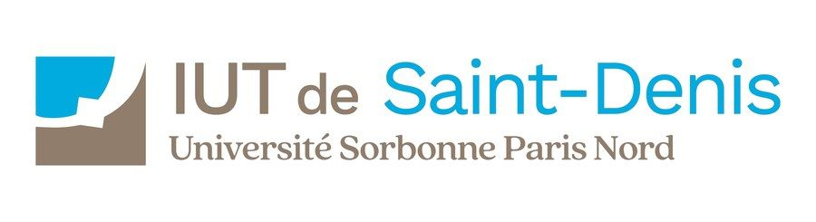
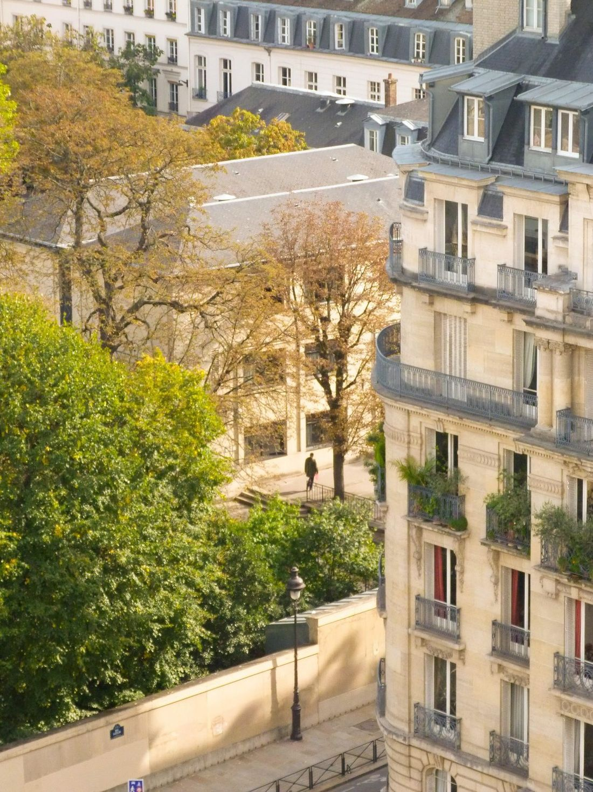
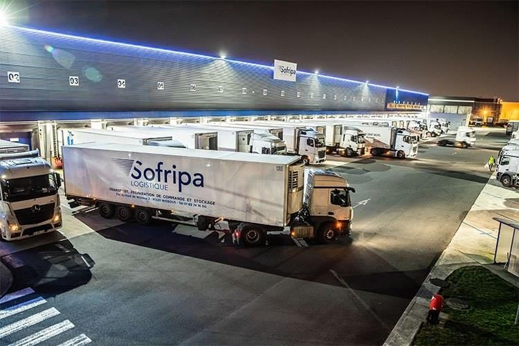
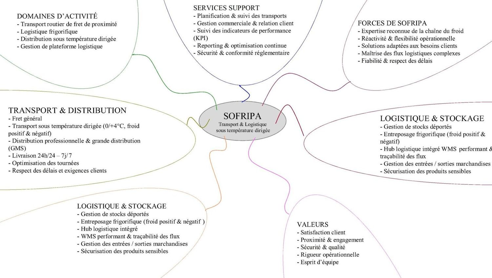
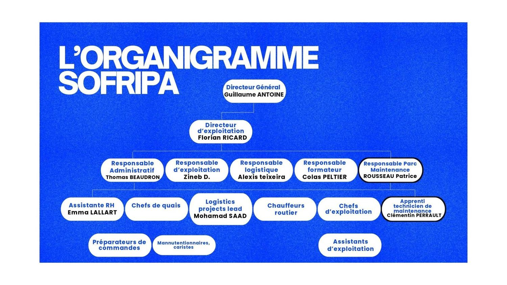
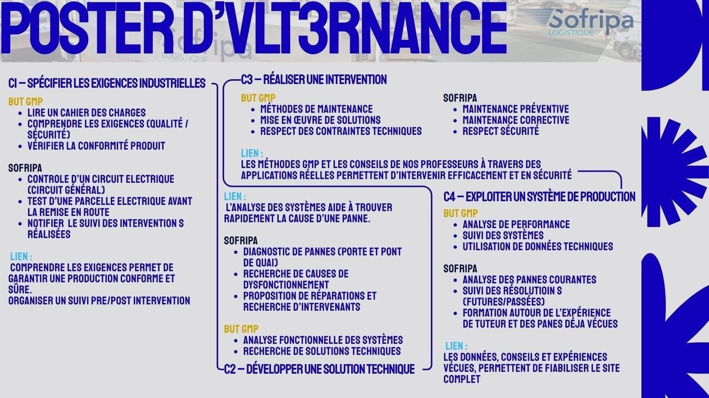
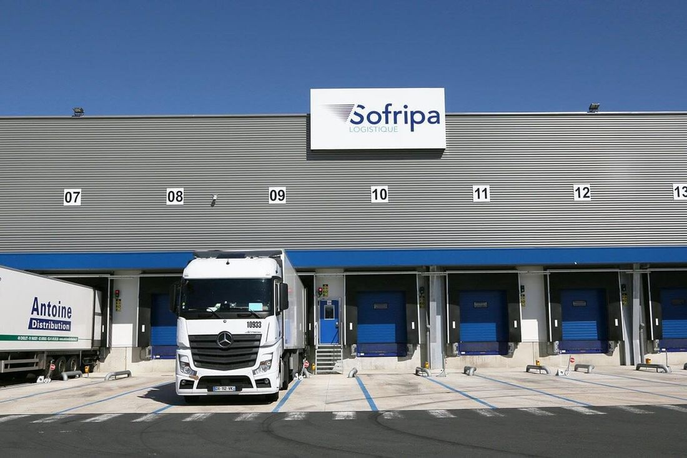
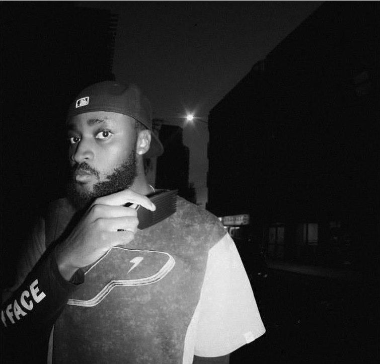

Étudiant en BUT Génie Mécanique et Productique (GMP) à l'IUT de Saint-Denis.
Je suis actuellement en programme travail-études chez SOFRIPA, après une première expérience chez Safran.
Je suis né en 2004, le 6 septembre, le même jour que Monsieur Idris Elba ou Monsieur Gilbert du Motier de La Fayette.
Je suis très sportif, ambitieux et intéressé par énormément de choses différentes : les voyages, l'art, la cuisine, la couture, la mode, la mécanique, l'entrepreneuriat, l'innovation…

Pourquoi ce portfolio ?
Ce portfolio a un objectif simple : donner un aperçu clair et rapide de mon profil, à travers des projets concrets.
Exemples de projets en alternance
Gabarit d'alignement de module pour le M88 (moteur de Rafale)
Étude d'une panne sur un camion, dans des délais très serrés
Projets professionnels supplémentaires
Travail d'archivage sur le site d'Arcueil (Armée de Terre)
Travail en tant que gardien d'immeuble, serveur
Projets en GMP
Projet de robot marcheur
Projets personnels
Projet de création de marque de vêtements
Projet de création d'entreprise
Qui suis-je
Je suis quelqu'un d'autonome, avec un intérêt marqué pour la conception et les améliorations de process.
J'aime comprendre comment les choses fonctionnent, passer de la théorie à la pratique, et voir un projet prendre forme, de l'idée au résultat final.
Ce qui me définit
Attentif aux détails
À l'aise dans le travail en équipe
Motivé par les projets et les défis
Ambitieux
Extraverti

Cartographie de compétences
Sport
Boxe
Course à pied
Intérêts
Découverte
Rencontres
Mode
Innovation
Dessin
Sport
Mécanique
Couture
Photographie
Points forts
CAO
Adaptabilité
Culture du résultat
Points faibles
Exigences
Impatience
Optimisation constante
Personnalité
Dynamique
Extraverti
Curieux
Persévérant
Résilient
Ma devise
« Chaque jour est fait pour trouver un moyen de devenir la meilleure version de moi-même. »
Pour moi, cette devise signifie que chaque jour est une occasion d'apprendre, de progresser et de se dépasser un peu plus. Même dans les petites tâches, j'essaie toujours de m'améliorer et de donner le meilleur de moi-même.
Mon état d'esprit
Dans un projet, je cherche avant tout à :
comprendre le besoin,
proposer des solutions réalistes,
travailler de manière structurée,
et aller jusqu'au bout du travail confié.
Je travaille avec une logique méthodique, et je m'adapte facilement à de nouveaux environnements.
Ce qui me révolte, ce qui m'enthousiasme
La situation qui me révolte le plus ? Plus que n'importe quoi d'autre, les injustices liées au racisme et à toutes les formes de discrimination, existantes et inimaginables. Quand on voit les conflits et la violence que cela engendre partout dans le monde depuis des années, c'est insupportable. Cela me dépasse et me blesse profondément de voir des gens persécutés, rejetés ou même tués juste pour ce qu'ils sont : leur couleur de peau, leur culture ou leurs origines.
Cela me rappelle cruellement qu'on ne peut pas baisser les bras : il faut se battre pour l'égalité et défendre nos valeurs humaines au quotidien.
Celle qui m'enthousiasme le plus ? Heureusement, il y a l'envers du décor, et c'est ce qui me booste : la solidarité, les victoires collectives et la richesse de nos différences. Ce qui me fait vibrer, ce sont les initiatives qui rassemblent, celles qui gomment les barrières et permettent à chacun de trouver sa place. C'est d'ailleurs ce que j'essaie de faire bouger à mon échelle tous les jours, notamment à travers mon engagement à la Croix-Rouge.
Sur un plan plus personnel, j'adore relever des défis. Voir mes efforts payer et regarder mes propres projets se concrétiser, ça fait un bien fou.

Pourquoi avoir choisi le BUT Génie Mécanique et Productique
J'ai choisi le BUT GMP parce que j'aime la mécanique et la production, et plus précisément la conception et le management (option supplémentaire Management de la Production Industrielle). Je voulais une formation qui combine théorie et pratique.
L'alternance m'a attiré car elle permet de découvrir le monde professionnel tout en apprenant.
Mon parcours
Après un parcours orienté vers la mécanique et l'industrie, j'ai intégré le BUT GMP afin de développer des compétences solides en conception, fabrication et gestion de projet.
2023 – 2024Alternance chez Safran
2024 – aujourd'huiAlternance chez SOFRIPA
Actuellement2e année de BUT GMP
Chaque étape m'a permis d'acquérir de l'autonomie, une méthode et une compréhension du monde.

Mon alternance chez Sofripa
Sofripa est une société spécialisée dans le transport routier de marchandises, avec une expertise particulière dans le transport frigorifique. Implantée à Wissous, elle propose des services de livraison sous température dirigée, assurés 24h/24 et 7j/7. L'entreprise prend également en charge la préparation de commandes ainsi que la gestion de stocks externalisés, offrant ainsi une solution logistique complète et adaptée aux besoins des professionnels.


Diagramme d'entreprise : Sofripa, transport et logistique sous température dirigée.
Organigramme Sofripa

Mon poste : apprenti technicien de maintenance, rattaché au responsable du parc maintenance.
Expérience d'apprentissage
La qualité de vie au travail est importante pour moi. Voici les sources de qualité au travail :
Appartenance
Équilibre
Sens
Contenu
Rôle
Reconnaissance
Ambiance
Conditions de travail
Process
J'ai choisi le process et l'équilibre.
Mes compétences et ma profession m'aident à me projeter dans le futur : je sais aujourd'hui ce que j'aimerais et ce que je ne veux plus au travail, ainsi que les comportements à adopter et les codes du monde du travail.
Je suis aujourd'hui reconnaissant de cette expérience vécue au sein de mon entreprise, et je saurai dans le futur la valoriser pour la faire valoir au poste auquel je prétendrai.
Poster d'alternance

Le poster relie les quatre compétences du BUT GMP à mes missions chez Sofripa.
C1 – Spécifier les exigences industrielles
BUT GMP
Lire un cahier des charges
Comprendre les exigences (qualité / sécurité)
Vérifier la conformité produit
Sofripa
Contrôle d'un circuit électrique (circuit général)
Test d'une parcelle électrique avant la remise en route
Notifier le suivi des interventions réalisées
Lien : comprendre les exigences permet de garantir une production conforme et sûre. Organiser un suivi pré / post intervention.
C2 – Développer une solution technique
BUT GMP
Analyse fonctionnelle des systèmes
Recherche de solutions techniques
Sofripa
Diagnostic de pannes (porte et pont de quai)
Recherche de causes de dysfonctionnement
Proposition de réparations et recherche d'intervenants
Lien : l'analyse des systèmes aide à trouver rapidement la cause d'une panne.
C3 – Réaliser une intervention
BUT GMP
Méthodes de maintenance
Mise en œuvre de solutions
Respect des contraintes techniques
Sofripa
Maintenance préventive
Maintenance corrective
Respect de la sécurité
Lien : les méthodes GMP et les conseils de nos professeurs, à travers des applications réelles, permettent d'intervenir efficacement et en sécurité.
C4 – Exploiter un système de production
BUT GMP
Analyse de performance
Suivi des systèmes
Utilisation de données techniques
Sofripa
Analyse des pannes courantes
Suivi des résolutions (futures / passées)
Formation autour de l'expérience de tuteur et des pannes déjà vécues
Lien : les données, conseils et expériences vécues permettent de fiabiliser le site complet.
Quelles qualités ai-je développées ?
Rigueur et organisation : pour respecter les plans et les délais.
Esprit d'équipe : travailler avec les autres pour atteindre un objectif.
Autonomie et curiosité : chercher des solutions par moi-même en entreprise.
Adaptation : jongler entre cours et missions en entreprise.
Une réussite
Lors de mon alternance chez SOFRIPA, j'ai participé à la remise en service complète de moteurs de portes de quais endommagés par la foudre. Près de 40 moteurs étaient à remplacer.
J'ai aidé à démonter les anciens moteurs, installer les nouveaux, les tester et vérifier que toutes les portes fonctionnaient correctement. J'ai utilisé mes connaissances techniques en mécanique et électricité, ainsi que l'aide de mon tuteur, pour respecter les consignes de sécurité et le planning.
Résultat : toutes les portes ont été remises en service rapidement, ce qui a permis à l'entreprise de reprendre ses activités normalement. Cette mission m'a appris la rigueur, l'organisation et l'importance de la coordination sur un projet concret et urgent.
Étude d'une panne sur un camion

Dans le cadre de mon activité chez Sofripa, j'ai été confronté à une panne immobilisant un camion, dans un contexte d'urgence opérationnelle. L'enjeu était majeur : l'immobilisation du véhicule impactait directement les livraisons et pouvait compromettre le respect des délais ainsi que la qualité du service, notamment dans le transport frigorifique.
Après une première analyse de la situation et un échange avec le conducteur, il est apparu que la panne ne provenait pas d'un problème mécanique classique, mais d'un dysfonctionnement de l'ordinateur de bord du camion (calculateur).
Ce défaut électronique empêchait le véhicule d'avancer correctement et provoquait également des anomalies secondaires, notamment des dysfonctionnements au niveau des feux et de l'éclairage intérieur. L'origine du problème nécessitait donc une reprogrammation du système électronique (nous ne pouvions pas intervenir cette fois-ci, afin de réduire les coûts).
Face à un délai très serré, plusieurs actions ont été mises en place :
Analyse rapide des symptômes et validation du diagnostic
Prise de contact avec le prestataire spécialisé
Organisation de l'intervention pour la reprogrammation du calculateur
Suivi de la remise en service du véhicule, afin de garantir rapidement sa fiabilité (les délais étant très serrés au départ)
Cette expérience m'a permis de développer et de démontrer :
Ma réactivité face à une situation critique
Ma capacité d'analyse dans un contexte technique
Ma gestion des priorités sous pression
Ma coordination avec différents interlocuteurs (conducteur, maintenance, hiérarchie)
Mon sens des responsabilités face aux enjeux opérationnels
Projets réalisés chez Safran Aircraft Engine
Mon alternance chez Safran (2023 – 2024) m'a notamment amené à réaliser un gabarit d'alignement de module pour le M88, le moteur du Rafale.
Mes projets sont présentés dans un portfolio dédié, accessible via ce lien ou en scannant le QR code.
Projet entrepreneurial qui visait à concevoir et développer une marque de vêtements, de l'idée initiale jusqu'à la création finale et la communication.
Ce projet m'a permis de travailler sur l'identité de marque (positionnement, valeurs, cible), la réflexion autour du design des produits, ainsi que sur les aspects liés à la communication et à la promotion. J'ai pu expérimenter le côté entrepreneurial et la gestion d'une marque de vêtements, et développer mon adresse et ma créativité à travers la couture.
Il m'a également permis de développer ma créativité autrement, ma capacité d'analyse de marché et ma vision stratégique.

Projet de création d'entreprise
Démarche complète de réflexion autour de la création d'une entreprise, de zéro à CA+ : étude de marché, définition du modèle économique, identification de la clientèle cible et élaboration d'un prévisionnel.
Ce projet m'a permis d'acquérir une vision globale du fonctionnement d'une entreprise, de rencontrer les premiers problèmes et de me retrouver face aux murs les plus robustes du monde de l'entrepreneuriat. J'ai aussi pu comprendre les enjeux financiers et organisationnels, et développer des compétences en gestion de projet, prise de décision et planification stratégique.
Projets professionnels supplémentaires
Travail d'archivage – Site d'Arcueil (Armée de Terre)
Mission d'archivage et de classement de documents administratifs sensibles au sein du site militaire d'Arcueil.
Mon travail nécessitait de la rigueur, de l'organisation, du respect des procédures et de la confidentialité. Cette expérience m'a permis de développer ma méthode de travail et mon sens des responsabilités dans un environnement structuré et exigeant, celui de la DRSD.
J'ai aussi pris goût au monde militaire, qui m'intéresse grandement aujourd'hui et qui, dans un futur proche, sera pour moi un objectif de milieu de travail.
Gardien d'immeuble
Gestion quotidienne d'un immeuble : entretien des parties communes, relation avec les résidents, gestion des incidents et suivi des prestataires.
Ce poste demandait de l'autonomie, le sens du service, de la réactivité et des qualités relationnelles.
La dureté du travail m'a ouvert les yeux sur la complexité physique que peut parfois avoir un métier, sur la fatigue physique et mentale de certaines tâches… et finalement sur le goût du travail.
Serveur dans un restaurant semi-gastronomique
Accueil et service des clients en restauration, prise de commandes et gestion des encaissements, avec une exigence supérieure liée à l'ambition de ce restaurant.
Cette expérience m'a permis de développer le dynamisme, l'adresse (orale et physique), l'esprit d'équipe et la qualité de service dans un environnement rythmé.
Dans le monde professionnel
Je pense avoir des relations respectueuses et simples avec le monde adulte et la hiérarchie. Pour moi, le respect est la base. J'écoute les consignes, j'essaie de faire au mieux ce qu'on me demande et je n'hésite pas à poser des questions quand je ne comprends pas.
Je vois la hiérarchie comme un soutien plus que comme une contrainte. Les responsables sont là pour guider, organiser le travail et nous aider à progresser. J'essaie toujours d'avoir une attitude sérieuse, tout en restant naturel dans les échanges.
Conclusion
Bilan personnel de compétences professionnelles
J'ai su m'impliquer dans chaque étape clé du projet : de la conception à l'usinage, en passant par la communication, les choix techniques et le suivi qualité. J'ai cherché à valoriser le travail collectif tout en apportant mes idées, en corrigeant des défauts, et en soutenant l'équipe dès que c'était possible.
Je pense être un atout pour ma classe ainsi que pour les groupes dans lesquels je m'implique. Je saurai le faire valoir, mais des preuves valent mieux que mille mots !
Ce qui m'a plu dans ma formation
BUT GMP à l'IUT de Saint-Denis : j'ai apprécié le côté concret et polyvalent. On conçoit, fabrique et teste des systèmes, mais on apprend aussi à organiser la production, le management industriel au sens large et le travail en équipe. L'alternance chez SOFRIPA rend tout cela encore plus motivant.